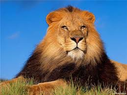

lomi
ლომი (ლათ. Panthera leo) — მტაცებელი ძუძუმწოვარი კატისებრთა ოჯახის, პანტერათა გვარის წარმომადგენელი. მისი სხეულის სიგრძე (ხვადისა) 180-240 სმ, მასა 180-227 კგ აღწევს. ძუ ტანად ხვადზე უფრო პატარაა. ლომს აქვს ძლიერი მოქნილი სხეული, მასიური თავი, გრძელი დინგი, შავი ფუნჯით დაბოლოებული გრძელი კუდი. მოზრდილ ხვადს ფაფარიც აქვს, დანარჩენი ბალანი მოკლეა და მოყვითალო. ბოკვერი ხალებიანია. ცნობილია ლომის 2 ქვესახეობა - აფრიკული და აზიური.

vepxvi
ვეფხვი (ლათ. Panthera tigris) — მტაცებელი ძუძუმწოვარი კატისებრთა ოჯახის, პანტერათა გვარის წარმომადგენელი. ვეფხვი კატისებრთა ოჯახის ყველაზე დიდი წარმომადგენელია, სხეულის სიგრძე 1,4–2,8 მ, კუდის — 0,6–1,1 მ, წონა 100–300 კგ. წაგრძელებული სხეული მოხატული აქვს განივი ზოლებით. გავრცელებულია ჩრდილოეთ კორეაში, ჩინეთში, ინდოეთში, ინდოჩინეთში, მალაის არქიპელაგზე, ჩრდილოეთ ირანში, უსურისა და ამურის მხარეებში, თალიშში, ამუდარიის ხეობაში, იშვიათად თურქმენეთში. ვეფხვი ნადირობს მსხვილ ძუძუმწოვრებზე, იშვიათად ფრინველებზე, ქვეწარმავლებზე და სხვა. თავს ესხმის ადამიანსაც. ვეფხვი 2–3 წელიწადში ერთხელ შობს თვალაუხილავ, უსუსურ 2–4 ბოკვერს (მაკეობა 105 დღემდეა).2 წლის ასაკიდან უკვე საკმაო ძალა აქვს დამოუკიდებლად სანადიროდ, სქესობრივ სიმწიფეს აღქევს 4–5 წლისა, ცოცხლობს საშუალოდ 8–10 წელს. აქვს 6–7 მ სიგრძის ნახტომი.[2]

საქართველოში ვეფხვი არ ბინადრობს. პირველად იგი XVIII საუკუნის დამლევს სოფელ ახმეტის მახლობლად მოკლეს. ეს ფაქტი აღნიშნული აქვს დავით მესხიშვილს. მონადირეებს იგი მეფე ერეკლესთვის მიურთმევიათ.[3] მეორედ 1922 წლის 4 დეკემბერს თბილისის მახლობლად, სოფელ ლელობთან მოკლეს. საქართველოში იგი აზერბაიჯანიდან მოხვდა. ვარაუდობენ, რომ ასეთი დიდი მანძილი ძუ ვეფხვის ძებნაში გაიარა. აზერბაიჯანიდან გარდაბნის ტყეში უნდა მოხვედრილიყო, შემდეგ — მანგლისში, მოგვიანებით ვეფხვმა მტკვრის მიდამოები დატოვა და მდინარე ხრამს ან ალგეთს მაღლა აუყვა. ამგვარად აღმოჩნდა თბილისიდან 23 კილომეტრით დაშორებულ სოფელ ლელობთან, სადაც გლეხების საქონელს ესხმოდა თავს[3]. ოთხმა ადგილობრივმა მონადირემ: გიორგი წითურიშვილმა, ალექსი წიკლაურმა, იოსებ წიკლაურმა და სიმონ ბექაურმა დიდი ძებნის შემდეგ მის ბუნაგს მიაკვლია და მოკლეს. მოკლული ვეფხვის დათვალიერებისას, მისი ტყავის ფერით, ნახატითა და აგრეთვე მესამე ღრძილის ე. წ. სიმხეცის კბილის არსებობით დადგინდა რომ ის ეკუთვნოდა კასპიურ ვეფხვს (Septeutrioriales). ეგზემპლარი გადაეცა საქართველოს მუზეუმის ტაქსიმედრიულ ლაბორატორიას ფიტულის გასაკეთებლად[4].
transformers
Transformers is a media franchise produced by American toy company Hasbro and Japanese toy company Takara Tomy. It primarily follows the heroic Autobots and the villainous Decepticons, two alien robot factions at war that can transform into other forms, such as vehicles and animals. The franchise encompasses toys, animation, comic books, video games and films. As of 2011, it generated more than ¥2 trillion ($25 billion) in revenue,[1] making it one of the highest-grossing media franchises of all time. The franchise began in 1984 with the Transformers toy line, comprising transforming mecha toys from Takara's Diaclone and Micro Change toylines rebranded for Western markets.[2] The term "Generation 1" (G1) covers both the animated television series The Transformers and the comic book series of the same name, which are further divided into Japanese, British and Canadian spin-offs. Sequels followed, such as the Generation 2 comic book and Beast Wars TV series, which became its own mini-universe. Generation 1 characters have been rebooted multiple times in the 21st century in comics from Dreamwave Productions (starting 2001), IDW Publishing (starting in 2005 and again in 2019), and Skybound Entertainment (beginning in 2023). There have been other incarnations of the story based on different toy lines during and after the 20th century. The first was the Robots in Disguise series, followed by three shows (Armada, Energon, and Cybertron) that constitute a single universe called the "Unicron Trilogy".

A live-action film series started in 2007, again distinct from previous incarnations, while the Transformers: Animated series merged concepts from the G1 continuity, the 2007 live-action film and the "Unicron Trilogy". For most of the 2010s, in an attempt to mitigate the wave of reboots, the "Aligned Continuity" was established. In 2018, Transformers: Cyberverse debuted, once again, distinct from the previous incarnations. Also in 2018, Hasbro launched a separate toy line called Transformers: War for Cybertron which featured 3 Netflix miniseries, releasing from 2020 to 2021. Another series, Transformers: EarthSpark, debuted in 2022, again separate from previous continuities. The 2024 animated film, Transformers One, once again takes place in a new continuity.
vestern
The spaghetti Western is a broad subgenre of Western films produced in Europe. It emerged in the mid-1960s in the wake of Sergio Leone's filmmaking style and international box-office success.[1] The term was used by foreign critics because most of these Westerns were produced and directed by Italians.[2] The majority of the films in the spaghetti Western genre were international co-productions by Italy and Spain, and sometimes France, West Germany, Britain, Portugal, Greece, Yugoslavia, and the United States. Over six hundred European Westerns were made between 1960 and 1978,[3] including nearly five hundred in Italy, which dominated the market.[4] Most spaghetti Westerns filmed between 1964 and 1978 were made on low budgets, and shot at Cinecittà Studios and various locations around southern Italy and Spain.[5]